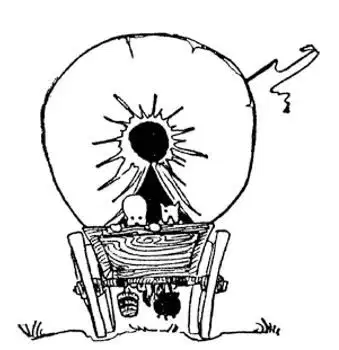

NOT so many years ago the Mississippi River was the far edge of the United States. Beyond the Mississippi it was wild, wilder, wilder-ness. Few people had ever been all the way across our country to the Pacific Ocean. There were wild Indians, wild animals, and high, high mountains in the way. Why did people want to go across the country anyway, and what sort of people were they? They were hunters who wanted to hunt wild animals, they were missionaries who wanted to make the Indians Christians, and they were people who were just inquisitive and who wanted to see what the wilderness was like.
Then one day a man told another, that another man had told him, that another man had told him, that still another man had told him that he had found gold in California, a land way off on the edge of the Pacific Ocean—plenty of gold; all you had to do was to dip it up in pans out of the rivers and pick it out of the sand and water.

Loaded their beds and cooking things
on wagons and started for the West
把床铺和炊具装上了马车出发奔向西部
Gold! Gold! It was almost as if some one had cried Fire! Fire! Thousands of people dropped their tools, stopped their farming, shut up their shops, loaded their beds and cooking things on wagons, put a cover over the wagon so that they could live under it as under a tent, took along a gun, and rushed for the Far West to hunt for gold. There were no roads, there were no bridges, there were no sign-boards to tell which was the right way—it was just wild, wilder, wilder-ness. For months and months they traveled. Many of them died of sickness, many were killed by the Indians, many were drowned in crossing rivers, many lost their way and died of starvation or of thirst—but many also, at last, reached California, found gold just where they heard it was to be found, and made their fortunes. This was in the year 1849, so these people who went West were called “Forty-niners.”
Since that time roads and railroads have been made all the way across the country; great cities have been built where once was only wilderness; and the wild Indians have been tamed. The United States has given the Indians large pieces of land to pay them for having taken other land away from them. These places given to the Indians are called “Reservations,” because they are reserved for them, just as a seat in the theater that is reserved for a person is called a “reserved seat.”
The first railroad to the Pacific coast took the middle route from Chicago to San Francisco. But you can now take a train from Chicago and cross to the Pacific by the north, middle, or south. It took months when the “Forty-niners” went across in their covered wagons, but now it takes less than one day by airplane.
People used to say, “Go West, Young Man, if you want to make a fortune,” and many thousands did go West, not looking for gold, but for farm lands, which were given them free by the United States if they would raise crops. Some of these men who went to Oklahoma and Texas and other places, chiefly west of the Mississippi, found oil oozing out of the ground on their farms. This oil spoiled the land for farming and made the water unfit even for the horses and cows to drink. The land was ruined—no good—so many farmers gave up and moved away.
There are three kinds of oil in the World—vegetable, animal, and mineral. Did you ever play the game called Animal, Vegetable, and Mineral? It’s a good game. The “Old Man” shouts, “Vegetable !” and you must name a vegetable, any vegetable—“potato,” for instance—before he can count ten. Or he shouts, “Mineral !” or “Animal!” and you must name a mineral or an animal before he counts ten. In this game a mineral is anything that isn’t animal or vegetable. But no matter whether he says “Animal,” “Vegetable,” or “Mineral,” you will always be right if you say, “Oil!” for it is one of the few things in the World that can be all three.
The oil from vegetables, like olive oil, and the oil from animals, like cod-liver oil, is good for food, but mineral oil from the rocks under the ground is not good for food. But some one found out that mineral oil could be burned to give light and heat, and then the automobile was invented, and from this mineral oil was made the gasoline to run automobiles. Many other things are now made from this kind of oil—medicine, colors for dyeing, and even perfumes.
People who thought their farms had been spoiled by oil found that the oil was worth a fortune, worth much more than what they could make out of chickens and pigs, or corn and wheat. Some wells had to be dug and the oil pumped up, but others sprouted up like fountains—these were called gushers.
This oil that comes out of the rock underneath the ground is called petroleum, which means rock oil. Some of the petroleum companies are nicknamed “Pete” for short, which is a pretty good name because Pete means “rock.”
If you take a train by the middle route you cross Iowa, the Corn State, passing through endless fields of corn. You next cross Nebraska and gradually rise higher and higher as the ground slopes gently upward, until you reach the State called Colorado. Colorado means “color red.” Colorado is at the foot of the highest mountains in America—they are called the Rocky Mountains. The capital of Colorado is Denver and Denver is just about half-way from Chicago to the Pacific Ocean.
Not so far from Denver you can climb to the top of a Rocky Mountain peak, if you want to and if you have a good heart. The first man who tried to climb this mountain was named Pike, but he gave it up, so ever since it has been called “Pike’s Peak.” When I was in school we used to try to say this “tongue-twister”: “Speak Pike, Speak Pike, Speak Pike” over and over as fast as we could without saying “Pike’s Peak.” We couldn’t do it—neither can you! Pike couldn’t climb to the top of his mountain, but nowadays thousands of people climb to the top each year just as a “stunt” to see in how many hours they can do it. Pike’s Peak is so high that there is snow on the top in the summer as well as in the winter, and it is so high in the air that there is very little air to breathe when you are at the top. A great many people cannot stand it at the top; they have to sit down. They gasp for breath as if they had been running, or like a fish out of water; their hearts beat fast and so hard they can hear it drumming in their ears, and they feel faint and weak. There are now an auto road and a railway up to the top, so that you don’t have to climb Pike’s Peak if you don’t want to. The railway track, however, is so steep that an ordinary railway car would slide down like a sled, so the track has small iron steps between the rails, and the car has a wheel that catches into the steps so that it cannot slip backward or run away down-hill—it walks up and down the steps.
以前，但并非遥远的古代，密西西比河是美国的远方边界线。密西西比河之外是渺无人烟的茫茫荒野。过去没有什么人横穿美国一直到达太平洋。因为路上会遇到野蛮的印第安人、凶猛的野兽和高高的大山。后来为什么有人要这么做呢？他们是些什么样的人呢？他们中有想猎捕野生动物的猎人，有希望向印第安人传播基督教的传教士，还有仅仅出于好奇的、想去荒野看个究竟的人。
后来有一天有个人告诉另一个人，说有人告诉他，他从另一个人那里听到一个传言，这个传言又是那个人听别人说的，说在加利福尼亚州——一个遥远的濒临太平洋的地方，有人发现了大量的金子；你要做的就是用淘金盘连沙带水把金子从河里捞出来，再从沙子和水中拣出金子。
金子！金子！就好像有人大声叫喊：着火了！着火了！成千上万的人放下手中的工具，停下农活，关上店铺，把床铺和炊具装上了马车，又在车上支起一个篷，这样他们就可以住在里面，就像是住在帐篷里一样，他们还带上了枪，然后出发奔向遥远的西部，加入淘金潮中。没有路，没有桥，没有道路指示牌告诉他们正确的方向——只有渺无人烟的茫茫荒野。他们走了一月又一月。在 路上很多人得病死了，很多人被印第安人杀死了，很多人在过河时淹死了，很多人迷路之后饿死了或者渴死了——但是还有很多人，最终到达了加利福尼亚州，在他们听说有金子的地方真的找到了金子，就此发了大财。当时正好是1849年，所以这些到西部去的人也被叫做“49淘金人”。
从那时起公路和铁路开始修建起来，横贯整个国家；以前的荒野之地建起了大城市；野蛮的印第安人也变温顺了。美国曾从印第安人那夺走了一些土地，现在作为补偿，给了他们另外的土地。这些给印第安人的土地叫做“保留地”，因为是专门为他们而保留的，就像剧院里为某个人保留的座位叫做“保留座位”一样。
第一条通往太平洋海岸的铁路是从芝加哥出发，沿着中间路线，抵达旧金山。但是现在乘火车从芝加哥出发，无论是沿北线、中线或者南线都可以到达太平洋海岸。“49淘金人”当初驾着大篷车，历经数月艰辛才能到达太平洋沿岸，现在乘飞机一天之内就能到达。
人们过去常说：“年轻人，想发财的话，就去西部吧。”成千上万的人确实到西部去了，不是去淘金，而是去找田地。当时美国政府规定，只要有人愿意在西部种庄稼，就可以免费获得那里的土地。其中有些人去了密西西比河西岸的俄克拉荷马州、德克萨斯州和其他地方，却发现农田里不断渗出油。这种油破坏了农田的土壤，还影响了水质，甚至马或牛都不能喝。土地被毁了——不能做农田了——因此很多农民放弃了田地，搬走了。
世界上有三种油——植物油、动物油和矿物油。你有没有玩过一种叫做“动物、植物和矿物”的游戏？那是个很好玩的游戏。“老人”大声喊：“植物！”那你就必须在他数到10之前说出一种植物，任何植物都可以，比如说“土豆”。或者他会喊：“矿物！”或“动物！”你就必须在他数到10之前说出一种矿物或动物。在这个游戏里，矿物指的是除动物或植物之外的东西。但是不管他是说“动物”、“植物”还是“矿物”，如果你说“油”，你永远都是正确的，因为世界上同时归于这三者的东西寥寥无几，油就是其中之一。
植物油，像橄榄油，动物油，如鱼肝油，适合做食物，但是地下岩石里的矿物油是不适合做食物的。但有人发现矿物油可以燃烧，发光发热，后来人们发明了汽车，从矿物油提取出汽油，开动汽车。现在有很多其他东西也是用这种油生产出来的——药物、染色颜料甚至香水。
那些以为农田被油毁掉的人发现这种油有巨大的价值，远比他们养鸡养猪或种玉米小麦能赚的钱更多。要获得矿物油就得先挖井，然后把油用泵抽上来， 但是有些地方油就像喷泉一样自然冒出来——这种叫做自喷井。
这种来自于地下岩石中的油叫做石油，顾名思义，就是“石中的油”。有些石油公司被人用简称戏称为“皮特”，这是个很不错的名字，因为皮特的意思就是“岩石” [1] 。
如果你乘火车从中线走的话，你会横穿“玉米之州”爱荷华，要经过无边无际的玉米地。接下来你会穿过内布拉斯加州，慢慢地，地势越来越高，最后到达叫做科罗拉多的州。科罗拉多的意思是“红颜色”。科罗拉多位于美国最高山脉的山脚下——这个山脉叫做落基山脉。科罗拉多州的州府是丹佛，丹佛差不多位于从芝加哥到太平洋的中途。
你可以在离丹佛不远的地方出发，登上落基山脉的顶峰，条件是你有这样的意愿，又有一颗强劲的心脏。第一个尝试登顶的人叫派克，但是他中途放弃了，从那之后这座山峰就被叫做“派克峰”。我上学的时候我们经常说的“绕口令”是：“说派克，说派克，说派克”，一遍又一遍，能说多快就说多快，而不会说成“派克峰”。我们做不到——你也做不到！派克没能登上以他名字命名的山峰，但是现在每年都有成千上万的人爬到山顶，只是为了展现自己的“特技”，比一比看谁能更快登顶。派克峰巍峨高耸，不论是冬天还是夏天山顶都白雪皑皑，地势越高，空气越稀薄，人在山顶会感到呼吸困难。很多人在山顶受不了，只好坐下来。他们就像刚跑过步一样，或者就像鱼儿离开了水一样大口大口吸气；此时心跳快速有力，能清楚听到自己“咚咚”的心跳声，人们感觉眩晕虚弱。现在有公路和铁路通往山顶，你可以选择坐车登上派克峰。然而，火车轨道非常陡峭，如果使用普通的火车，车厢会像雪橇一样滑下来。人们就在轨道上的两条铁轨之间铺设了有小“台阶”的齿轨，火车配有齿轮，行驶的时候齿轮卡着齿轨上的“台阶”一步一步向前走，这样火车就不会向后滑或脱轨冲下山——它是顺着台阶上山下山的。
[1] 英语“pete”（皮特）是“peter”（皮得）的昵称。“Peter”的希腊语有“岩石”之意——译者注。